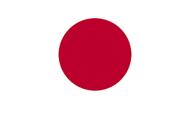

Страны мечты
Страна

Герб


Национальные символы

Столица
Токио
Амстердам
Берлин
Пхеньян
Япония — государство в Восточной Азии, расположенное на Японском архипелаге в западной части Тихого океана. Относится к крупнейшим государствам мира по численности населения, экономическому и политическому влиянию.
Нидерланды – равнинная страна на северо-западе Европы, известная своими каналами, полями тюльпанов, ветряными мельницами и велосипедными дорожками.
Германия – государство в Западной Европе с лесами, реками, горными хребтами и пляжными курортами Северного моря. История страны охватывает период в более чем две тысячи лет.
Корейская Народно-Демократическая Республика — государство в Восточной Азии, широко известное под неофициальным названием Северная Корея. Расположено в северной части Корейского полуострова.